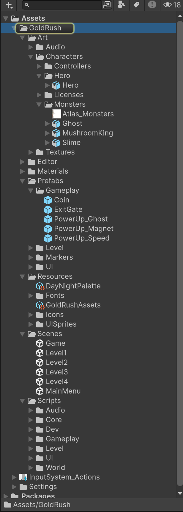
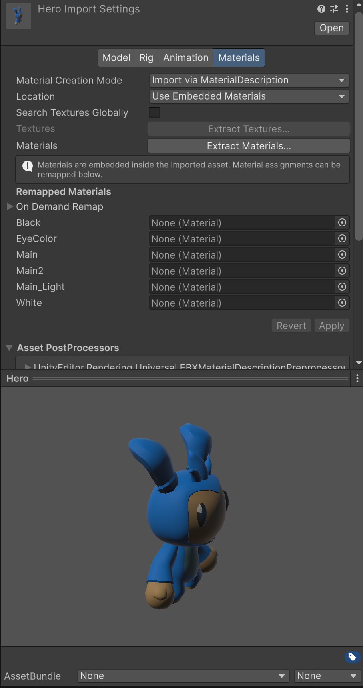
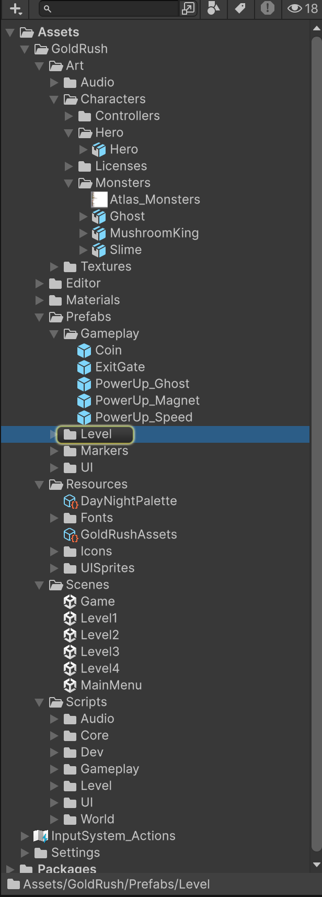
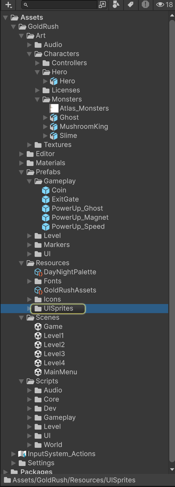
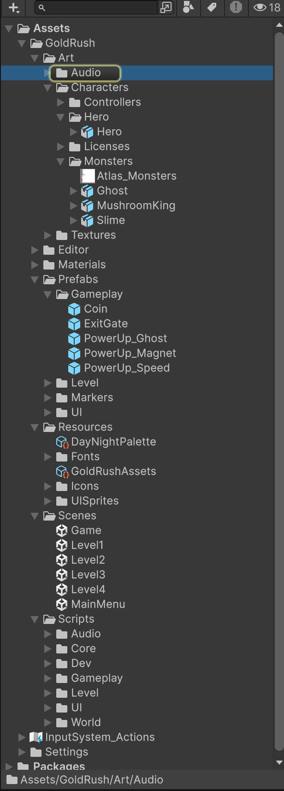

GOLD RUSH · Phase 0
Create the project
You make a new, empty Unity project called GoldRush. You add the packages the game needs and set the input mode. Then you import the starter package: the characters, sounds, icons, fonts, UI shapes, materials and the ready-made level kit. At the end you open a small test scene with the hero and a few kit pieces.
1What you get
- You need Unity Hub and Unity 6000.6.10f1 or newer (Unity 6.6). The course was made with 6000.6.10f1.
- You need the package
GoldRush_Phase00_Project.unitypackage.
How this course works. Every phase has its own package. You import it, then you check the important objects in the editor and read how the code works. You do not build each phase by hand. You build things yourself in the Practicals.
The order: first the main menu (phases 1–2), then the level, the player and the gameplay (phases 3–8), then the game UI and the final polish (phases 9–10).
Assets/GoldRush folder first. Then import the package of that phase.2Create the project
- Open Unity Hub.
- Click New project.
- At the top, pick the editor version 6000.6.10f1 (or newer).
- Pick the template Universal 3D. If it shows a download button, click it first.
- Project name:
GoldRush. - Choose a location you can find again (for example your Desktop).
- Untick Connect to Unity Cloud and Use Unity Version Control. You do not need them.
- Click Create project. Wait. The first start takes a few minutes.
Universal 3D means the project uses URP (Universal Render Pipeline). URP is the modern Unity renderer. It works on PC and on phones, and it gives us glow (bloom) and soft shadows.
3Clean up the template
- In the Project window, open the
Assetsfolder. - Right-click the
TutorialInfofolder → Delete → Delete. - Right-click the
Readmefile → Delete → Delete. - You can also delete
Assets/Scenes(it only hasSampleScene).
Settings folder. It holds the URP settings (PC_RPAsset, Mobile_RPAsset). Without it, everything turns pink.4Packages: install AI Navigation
A package is an extra part of Unity that you add to a project. The game needs three:
| Package | Version in the real game | What it does |
|---|---|---|
| Universal RP | 17.6.0 | The renderer (already in the template). |
| Input System | 1.20.1 | Keyboard, mouse, touch and UI input (already in the template). |
| AI Navigation | 2.0.16 | NavMesh: monsters use it to find their way (phase 7). You install it now. |
- Open Window → Package Management → Package Manager.
- On the left, click In Project. Check that Universal RP and Input System are in the list. A newer version is fine.
- On the left, click Unity Registry. In the search box, type
AI Navigation. - Click AI Navigation → Install. Wait until it is done. Close the Package Manager.

5Set Active Input Handling to Both
The game scripts read the keyboard and mouse with Unity's classic Input class (for example Input.GetKey(KeyCode.W)). The UI buttons use the new Input System. So the project must allow both.
- Open Edit → Project Settings…
- On the left, click Player.
- Open Other Settings. Scroll down to Configuration.
- Set Active Input Handling to Both.
- Unity asks to restart. Click Apply (or Yes). Unity closes and opens again.
6Import the starter package
- Open Assets → Import Package → Custom Package…
- Choose
GoldRush_Phase00_Project.unitypackage. Click Open. - Keep everything ticked. Click Import. Wait until the import bar is gone.
- Open Window → General → Console. There must be no red errors.
Resources. The scripts find them by name.7Check
Look at these places in the Project window. Compare with the pictures.
Check 1 · The folder tree
Everything is inside Assets/GoldRush. The folders have the same names as in the real game:
| Folder | What is inside |
|---|---|
Art/Characters | The hero and the three monsters (Hero.fbx, Slime.fbx, Ghost.fbx, MushroomKing.fbx, by Quaternius, CC0) with their animations, and the licences. (The Animator Controllers come with the Phase 1 package.) |
Art/Audio | 15 sound effects and the music: 16 .wav files. |
Art/Textures | The floor grid texture. |
Materials | All materials: M_Floor, M_Block, M_Red, M_GlowCyan, M_Gold, … and the base materials GR_Lit, GR_SunsetSky, … |
Prefabs/Level | The level kit: floor, blocks, walls, pillar, lamp post, barrier, terminal, … (phase 3). |
Prefabs/Gameplay | Not in this package. The coin, exit gate, power-up, monster and player prefabs come with Phase 1, together with all the scripts. |
Resources | UISprites (UI shapes), Icons (Material Icons), Fonts (Poppins). Resources is a special folder: scripts load files from it by name while the game runs. |
Scenes | The test scene Sandbox. |
Scripts | Not in this package yet. From Phase 1 on, every package has all the game scripts (in Audio, Core, Gameplay, Level, UI, World). |

Check 2 · The hero model
Click Art/Characters/Hero/Hero.fbx. In the Inspector, open the Animation tab. The file has all the hero's moves: Idle, Walk, Run, Wave, HitReact, Death, … The game uses Idle, Walk and Run to move, Wave to cheer, HitReact and Death when a monster hits.

Check 3 · The level kit
Open Prefabs/Level. A prefab is a saved GameObject that you can place many times. Every kit piece has its pivot at the bottom: at Y = 0 it stands exactly on the floor. You take a full tour of the kit in phase 3.

Check 4 · The UI shapes
Open Resources/UISprites. The whole UI is made from these few shapes: pill, rr (rounded rectangle), circle, their thin outlines (pillo, rro2, ring2), the soft glow soft and the fades fadeD, fadeR, fadeU.

Check 5 · The sounds
Open Art/Audio. Click a file and press the play button at the bottom of the Inspector to hear it.

Check 6 · The Sandbox scene
Double-click Scenes/Sandbox. It has a floor (Floor_40m), the hero (Hero.fbx at scale 0.337: the model file is about 4 m tall, at 0.337 the hero is 1.35 m), and three kit pieces: Block_2x2x2, Pillar and LampPost.

8How it works
There is no code to read yet. Three ideas you need for the next phases:
- Prefab instance. When you drag a prefab into a scene, its name is blue in the Hierarchy. Change one copy in the scene: only that copy changes. Change the prefab file: every copy changes.
- Resources. A script can load a file from a
Resourcesfolder by name, for example the iconic_staror the fontPoppins-Bold. That is why you must not rename these files. - Materials are shared. All grey blocks use the same material
M_Block. Change its colour and every block in every scene changes (see Try it).
9▶ Press Play
- Open
Scenes/Sandbox. - Click the ▶ Play button at the top. Look at the Game view.
- Click ▶ again to stop.

You should see:
- The hero and three kit pieces on the grid floor. The hero stands still in his rest pose: that is fine for now.
- No pink materials.
- No red errors in the Console.
10Try it
- Click
Materials/M_Block. In the Inspector, click the colour next to Base Map and pick a strong colour (for example red). The block in the Scene view changes at once. - Press Ctrl+Z (Cmd+Z) to change it back. This material is used by every block in every level.
- Select
Block_2x2x2in the Hierarchy and change its Position Y to1. It floats. Set it back to0: the pivot is at the bottom.
11Common problems
| Problem | Fix |
|---|---|
| Everything is pink. | The URP settings are missing. Do not delete the Settings folder. Check Edit → Project Settings → Graphics: Default Render Pipeline must be a URP asset (for example PC_RPAsset). If you made a 3D (Built-In) project by mistake, make a new project with Universal 3D. |
| The template Universal 3D is not in the list. | Scroll down in Unity Hub, or click the download icon next to it. Check that you picked Unity 6000.6.10f1 or newer. |
| I cannot find Package Management in the Window menu. | In some Unity 6 versions it is Window → Package Manager directly. |
| Active Input Handling: I chose Both, but nothing happened. | Unity must restart. Close Unity yourself and open the project again from Unity Hub. |
Red errors right after the import (for example about Unity.AI.Navigation). | Install AI Navigation (step 4). The errors go away by themselves. |
A second copy of a file appears, for example UIKit 1.cs. | You imported into a project that already had the files. Use a new empty project, or delete Assets/GoldRush before you import. |
More fixes are on the Troubleshooting page. New words are in the Glossary.
Next: in Phase 1 you import the main menu: a 3D stage with the hero and the title screen.